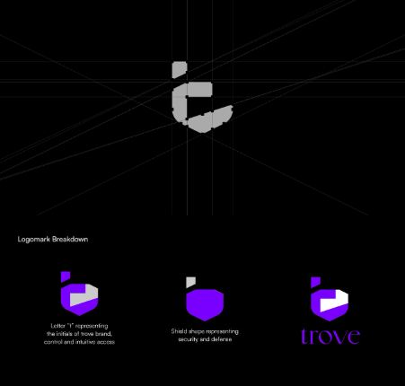
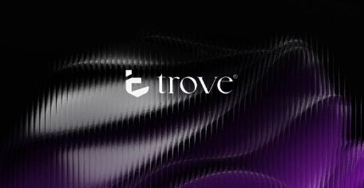
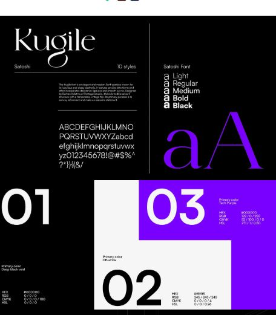
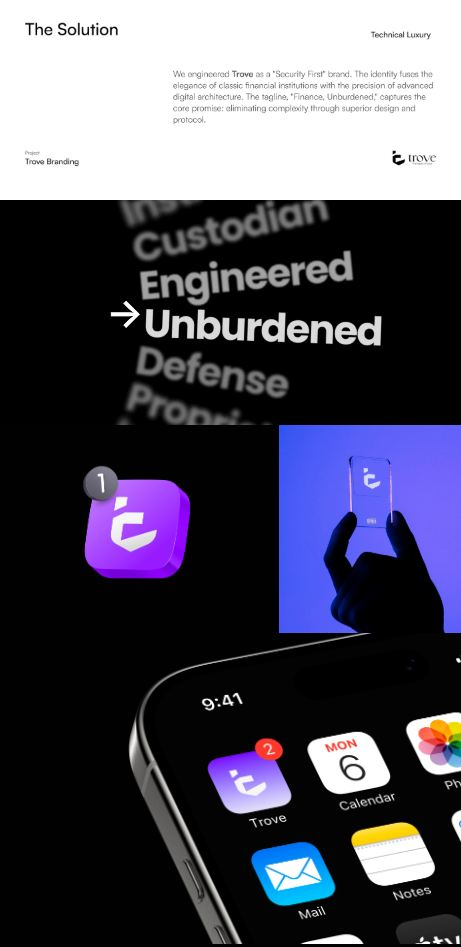
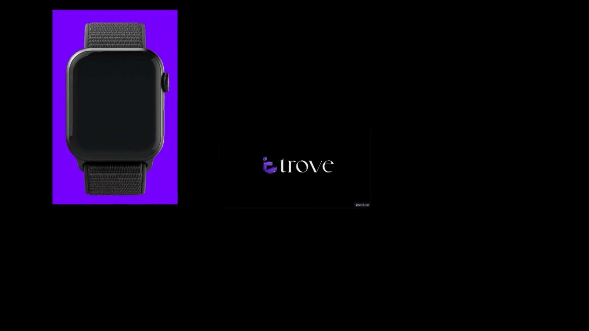
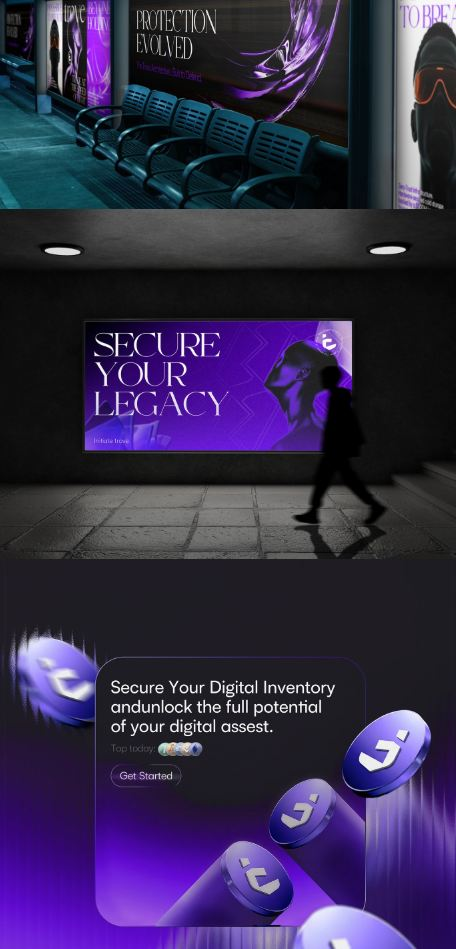
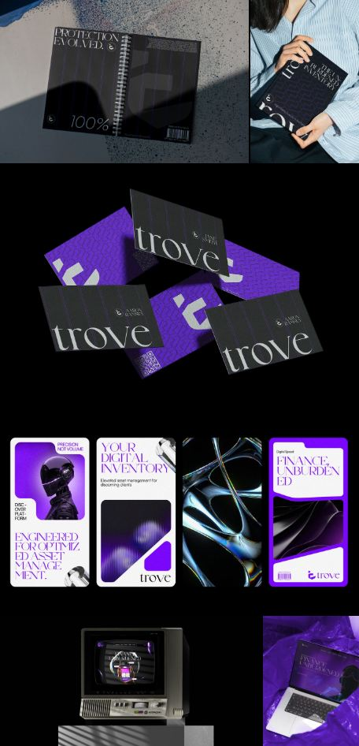
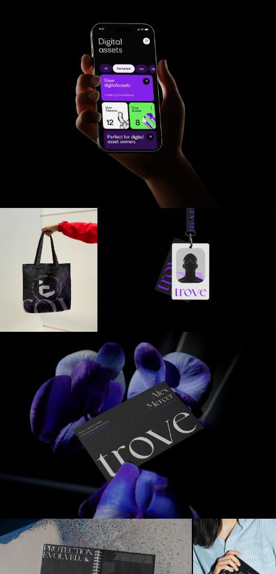
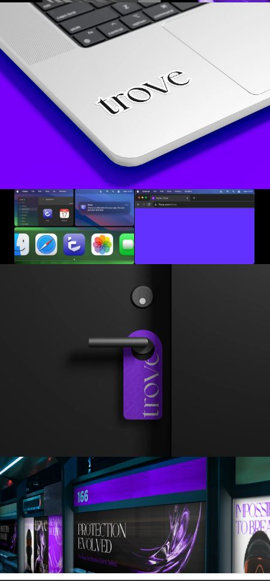
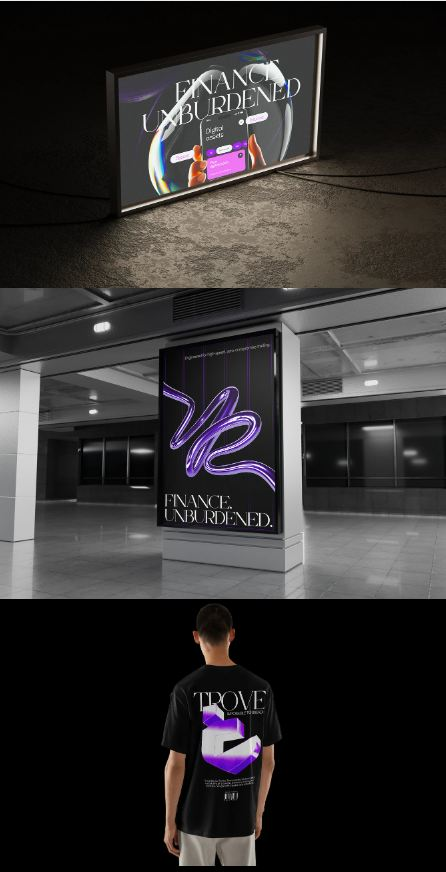

A shield you have to look twice at
The shield is the letterform, not an icon beside it. A literal padlock would have read faster and meant less — every custody brand already owns that. Making the reader resolve the shape buys a second of attention.
A self-initiated brand for an institutional custody platform bridging DeFi and CeFi — built to ask whether security can feel composed rather than defensive.
Security brands default to hardened, technical and cold. Padlocks, shields, dark blue. The category signals protection by looking like protection. Trove started from a different question: whether the composure of classical finance could carry the precision of digital architecture, without either one cancelling the other out.
Institutional custody sits between two audiences who want opposite things. Traditional finance wants the reassurance of permanence — serif type, restraint, the visual language of institutions that have been standing a long time.
Digital asset platforms want the opposite: speed, technology, a sense that the system is ahead of everyone else. Most brands in the space pick one and lose the other.
The mark resolves a lowercase t into a shield. It's the brand's initial and its promise in one form, and it holds at app-icon size where more literal security imagery falls apart.
A high-contrast display serif carries the institutional half. A saturated violet against deep black carries the technological half. The tagline — Finance, Unburdened — states the actual proposition: removing complexity rather than advertising the security.
The shield is the letterform, not an icon beside it. A literal padlock would have read faster and meant less — every custody brand already owns that. Making the reader resolve the shape buys a second of attention.
Deep-tech brands reach for geometric sans by reflex. The serif is the single move that makes Trove read as an institution rather than a startup, and it's what lets the violet feel deliberate instead of loud.
Identity work is usually judged on a logo sheet. Taking it to transit advertising, billboards, stationery, merchandise and an animated mark tests whether the system survives at every scale — which is the actual question a client is asking.









